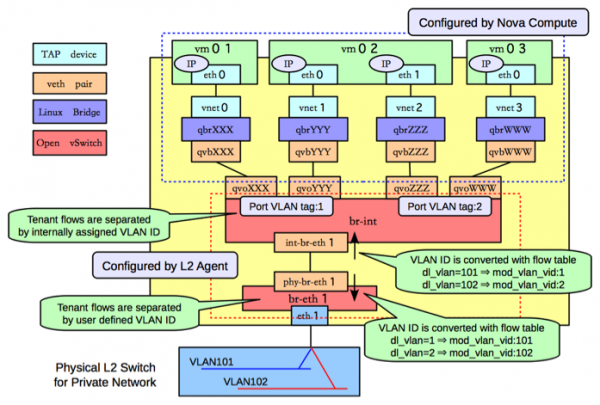

摘要
在传统的网络中，我们通常要限制客户端对主机的访问，基本上是为了安全的考虑，比如禁止外网用户对3389端口的访问。在linux中可以通过免费的iptables来实现。自然，在云环境中，用户自然也有这样的需求。
安全组是什么
可以在官方看他的定义
我理解的安全组就是可以绑定在port上的一组规则，这些规则可以限制数据包的入栈和出栈
一个port可以关联好多安全组
安全组和FWaaS的区别
iptables
默认情况下，安全组是通过iptables来实现的，iptable的规则配置在哪里呢，先看这个图：

每个port有个qbr，iptables的规则就配置在这个qbr上，我们可以看个例子1
2
3
4
5
6
7
8
9
10
11
12
13
14
15
16
17
18
19
20
21
22
23
24
25
26
27
28
29
30
31
32
33
34
35
36
37
38
39
40
41
42
43
44
45
46
47
48
49
50
51
52
53
54
55
56
57
58
59
60
61
62
63
64
65
66
67
68
69
70
71
72
73
74
75
76
77
78
79
80
81
82
83
84
85
86
87[root@206-215-45-34-55 neutron]# iptables -nL
Chain INPUT (policy ACCEPT)
target prot opt source destination
neutron-openvswi-INPUT all -- 0.0.0.0/0 0.0.0.0/0
ACCEPT udp -- 0.0.0.0/0 0.0.0.0/0 udp dpt:53
ACCEPT tcp -- 0.0.0.0/0 0.0.0.0/0 tcp dpt:53
ACCEPT udp -- 0.0.0.0/0 0.0.0.0/0 udp dpt:67
ACCEPT tcp -- 0.0.0.0/0 0.0.0.0/0 tcp dpt:67
Chain FORWARD (policy ACCEPT)
target prot opt source destination
neutron-filter-top all -- 0.0.0.0/0 0.0.0.0/0
neutron-openvswi-FORWARD all -- 0.0.0.0/0 0.0.0.0/0
ACCEPT all -- 0.0.0.0/0 192.168.122.0/24 state RELATED,ESTABLISHED
ACCEPT all -- 192.168.122.0/24 0.0.0.0/0
ACCEPT all -- 0.0.0.0/0 0.0.0.0/0
REJECT all -- 0.0.0.0/0 0.0.0.0/0 reject-with icmp-port-unreachable
REJECT all -- 0.0.0.0/0 0.0.0.0/0 reject-with icmp-port-unreachable
Chain OUTPUT (policy ACCEPT)
target prot opt source destination
neutron-filter-top all -- 0.0.0.0/0 0.0.0.0/0
neutron-openvswi-OUTPUT all -- 0.0.0.0/0 0.0.0.0/0
Chain neutron-filter-top (2 references)
target prot opt source destination
neutron-openvswi-local all -- 0.0.0.0/0 0.0.0.0/0
Chain neutron-openvswi-FORWARD (1 references)
target prot opt source destination
neutron-openvswi-sg-chain all -- 0.0.0.0/0 0.0.0.0/0 PHYSDEV match --physdev-out tap259c021c-42 --physdev-is-bridged
neutron-openvswi-sg-chain all -- 0.0.0.0/0 0.0.0.0/0 PHYSDEV match --physdev-in tap259c021c-42 --physdev-is-bridged
Chain neutron-openvswi-INPUT (1 references)
target prot opt source
neutron-openvswi-o259c021c-4 all -- 0.0.0.0/0 0.0.0.0/0 PHYSDEV match --physdev-in tap259c021c-42 --physdev-is-bridged
Chain neutron-openvswi-OUTPUT (1 references)
target prot opt source destination
Chain neutron-openvswi-i259c021c-4 (1 references)
target prot opt source destination
DROP all -- 0.0.0.0/0 0.0.0.0/0 state INVALID
RETURN all -- 0.0.0.0/0 0.0.0.0/0 state RELATED,ESTABLISHED
RETURN udp -- 192.168.200.2 0.0.0.0/0 udp spt:67 dpt:68
neutron-openvswi-i273bfab5-6 all -- 0.0.0.0/0 0.0.0.0/0
neutron-openvswi-sg-fallback all -- 0.0.0.0/0 0.0.0.0/0
Chain neutron-openvswi-i273bfab5-6 (1 references)
target prot opt source destination
DROP all -- 0.0.0.0/0 0.0.0.0/0 state INVALID
ACCEPT all -- 0.0.0.0/0 0.0.0.0/0 state RELATED,ESTABLISHED
ACCEPT all -- 192.168.200.3 0.0.0.0/0
ACCEPT all -- 0.0.0.0/0 0.0.0.0/0
Chain neutron-openvswi-local (1 references)
target prot opt source destination
Chain neutron-openvswi-o259c021c-4 (2 references)
target prot opt source destination
RETURN udp -- 0.0.0.0/0 0.0.0.0/0 udp spt:68 dpt:67
neutron-openvswi-s259c021c-4 all -- 0.0.0.0/0 0.0.0.0/0
DROP udp -- 0.0.0.0/0 0.0.0.0/0 udp spt:67 dpt:68
DROP all -- 0.0.0.0/0 0.0.0.0/0 state INVALID
RETURN all -- 0.0.0.0/0 0.0.0.0/0 state RELATED,ESTABLISHED
neutron-openvswi-o273bfab5-6 all -- 0.0.0.0/0 0.0.0.0/0
neutron-openvswi-sg-fallback all -- 0.0.0.0/0 0.0.0.0/0
Chain neutron-openvswi-o273bfab5-6 (1 references)
target prot opt source destination
DROP all -- 0.0.0.0/0 0.0.0.0/0 state INVALID
ACCEPT all -- 0.0.0.0/0 0.0.0.0/0 state RELATED,ESTABLISHED
ACCEPT all -- 0.0.0.0/0 0.0.0.0/0
Chain neutron-openvswi-s259c021c-4 (1 references)
target prot opt source destination
RETURN all -- 0.0.0.0/0 0.0.0.0/0
Chain neutron-openvswi-sg-chain (2 references)
target prot opt source destination
neutron-openvswi-i259c021c-4 all -- 0.0.0.0/0 0.0.0.0/0 PHYSDEV match --physdev-out tap259c021c-42 --physdev-is-bridged
neutron-openvswi-o259c021c-4 all -- 0.0.0.0/0 0.0.0.0/0 PHYSDEV match --physdev-in tap259c021c-42 --physdev-is-bridged
ACCEPT all -- 0.0.0.0/0 0.0.0.0/0
Chain neutron-openvswi-sg-fallback (2 references)
target prot opt source destination
DROP all -- 0.0.0.0/0 0.0.0.0/0
千万别以为太多了，实际上，这只是一个计算借点上的一个port而已，虚机越多，规则越多。在看明白上面的规则之前，需要理一理iptable的大致规则。
- iptables的阶段
iptables处理包有5个阶段，在不同阶段调用不同的回调
1.PREROUTING (路由前)
2.INPUT (数据包流入口)
3.FORWARD (转发管卡)
4.OUTPUT(数据包出口)
5.POSTROUTING（路由后） - iptables的chain
在每个阶段的回调，可以执行一个或多个规则，这些依次运行的规则可以组成一个chain，规则包括执行条件和对应的action，action可以为执行下一个chain。每个阶段都有一个默认的chain.比如我们看这个INPUT的chain，默认是全部ACCEPT，第一个规则是0.0.0.0/0 他的action不是DROP/ACCEPT，而是一个chain，意思就是所有包先过这个chain检查再说，如果这个chain检查的结果：1
2
3
4
5
6
7Chain INPUT (policy ACCEPT)
target prot opt source destination
neutron-openvswi-INPUT all -- 0.0.0.0/0 0.0.0.0/0
ACCEPT udp -- 0.0.0.0/0 0.0.0.0/0 udp dpt:53
ACCEPT tcp -- 0.0.0.0/0 0.0.0.0/0 tcp dpt:53
ACCEPT udp -- 0.0.0.0/0 0.0.0.0/0 udp dpt:67
ACCEPT tcp -- 0.0.0.0/0 0.0.0.0/0 tcp dpt:67
1.ACCEPT：接受这个包，后面的规则可以不过了
2.DROP：丢掉这个包，后面的规则可以不过了
3.RETURN：继续过后面的规则，知道遇到ACCEPT或DROP为止 - iptables的table
table 是-t的参数，可以在3个中选择，nat, filter, mangle。
nat：用于实现snat或者dnat
filter：这个table里的配置用于决定包过还是不过，安全组肯定是使用这个功能
mangle：用户修改报文内容的。
比如我们想配置一个nat出去，一台机器做nat网管可以这样配置：1
iptables -t nat -A POSTROUTING -s 192.168.0.0/24 -j SNAT --to 10.4.5.6
192.168.0.0/24来的ip，都会翻译成10.4.5.6出去
-t nat是说这个规则是配置nat的
-A POSTROUTING，是说在POSTROUTING这个chain的最后加一条nat规则。POSTROUTING是说找完路由丢出去之前修改source IP
-j just到一个target，但好难理解，其实就是执行一个动作，比如-j DROP, -j RETURN,这里是做SNAT
所以回到上面的例子：
INPUT方向来包后，先过neutron-openvswi-INPUT 这个chain的检查，而这个chain，就是全过，当然只有网卡为tap259c021c-42才检查1
2
3Chain neutron-openvswi-INPUT (1 references)
target prot opt source
neutron-openvswi-o259c021c-4 all -- 0.0.0.0/0 0.0.0.0/0 PHYSDEV match --physdev-in tap259c021c-42 --physdev-is-bridged